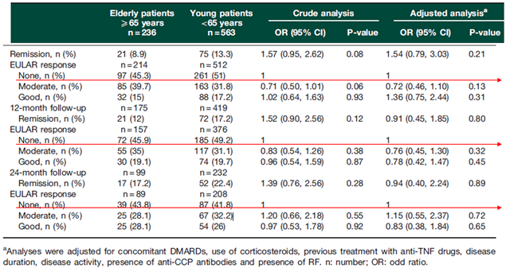

対オレンシア③有効性
オレンシアは65歳未満でも65歳以上でもNon responderse が50％近く存在する（ORA registry)

6M,12M,24Mいずれの観察時点においても、65歳未満でも65歳以上でもEULAR response None が約50%存在。
Good response は20%程度であった。
そもそもオレンシアは効果が高くない
対オレンシア③有効性
6M,12M,24Mいずれの観察時点においても、65歳未満でも65歳以上でもEULAR response None が約50%存在。
Good response は20%程度であった。
そもそもオレンシアは効果が高くない